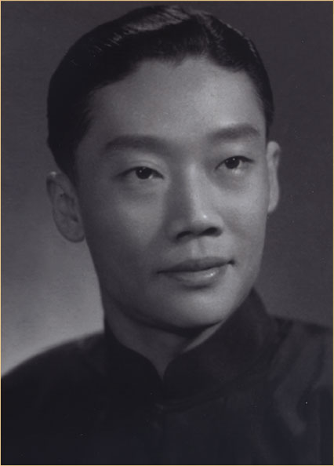
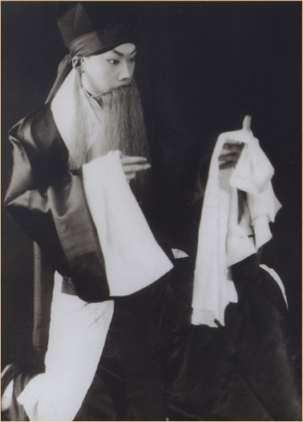
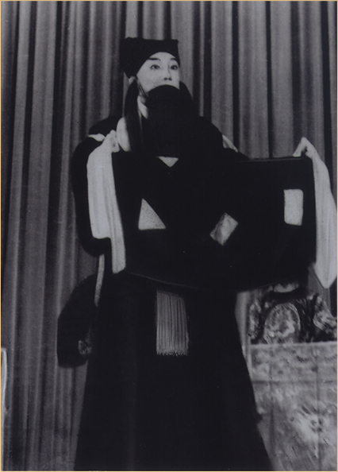
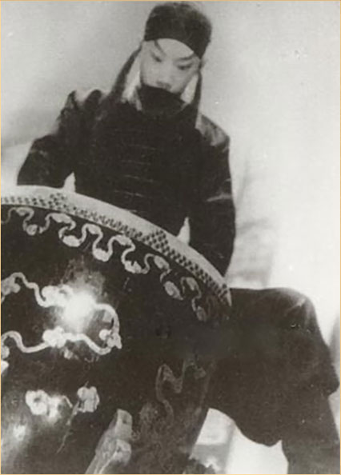

近百年来，谭鑫培的谭派、余叔岩的余派和杨宝森的杨派已经形成了一脉相承的一大派系，而且被京剧界认定为老生行当中的主派系。杨派声腔，在继承谭、余的基础上自成一格，以沉雄苍劲、醇厚清雅、浑然大气著称于世。其高超的技法，足以堪称韵味派老生的第三座里程碑。
-

杨宝森（1909.10.9—1958.2.10）字钟秀，别号时斋，祖籍安徽庐州府合肥县，生于北京一个梨园世家。祖父杨桂云，字朵仙，是清末四喜班中著名的花旦演员，父亲杨孝方，又名杨幼朵，是武生演员。伯父杨小朵，也是著名花旦演员，堂兄杨宝忠，是杰出的琴师。杨宝森在这个家庭里，从小便受到京剧艺术的熏陶。他的艺术生活，可以分为三个时期。
-

他八岁时，由著名花脸演员裘桂仙开蒙，练毯子功、学老生戏。后来，主要向著名老生教师陈秀华和著名里子老生鲍吉祥学谭派、余派戏。1922年他十三岁时，又在斌庆社科班里搭班演出，借台练艺。因此，他幼功基础很扎实。1924年，他首次到上海公演于更新舞台时，便被评为“酷似叔岩”，“虽年轻，对于谭学已研摹有素”。
-

杨宝森在1935年的一首诗作中这样形容自己：“满腹戏曲歌不成，箪食瓢饮苦练声”。杨宝森在这样的精神苦修中经受磨砺，默默求索谭、余艺术的真谛，积淀力量，等待着涅槃。他十分注意提高自己的文化素养，很喜欢读书，很喜欢和文人在一起研究戏情戏理、学习音韵知识，对于书法、绘画等艺术门类也作了广泛接触。1946年11月、1947年10月和1948年4月，他三次随梅兰芳在上海演出，嗓音已恢复和锻炼得颇有韵味，唱念艺术有了更高的造诣，个人风格已然成型，他的演出受到很大欢迎，声誉逐步提高。从那时起，他与马连良、谭富英、奚啸伯被正式并称为“四大须生”。
-

1949年8月，善做伯乐的艺术大师尚小云陪杨宝森到天津演出，非但让杨宝森名悬头牌，自己列在二牌，而且破格在《伍子胥·浣纱记》中为杨配演浣纱女、在《搜孤救孤》中配演程夫人，使杨宝森声名大震。他先在北京成立了宝华京剧团，巡演于大江南北，后又落户天津。
1956年6月，天津市京剧团建立，他担任了团长和首席领衔主演，他将历经多年锤炼的《失·空·斩》《击鼓骂曹》《桑园寄子》《李陵碑》《清官册》《洪羊洞》等剧目，再度进行了一番精加工。这一时期，是他开宗立派之期。他的艺业处于巅峰状态，唱念已臻炉火纯青之境，学习和效法者不断涌现。虽然他自己一再谦诚地表示“不称派”，但实际已有了“杨派”之称。
杨宝森演唱艺术高超而丰富的技法，特别值得从微观上作深入探究，这可从五个环节进行解析。
杨宝森的嗓音宽厚、圆润而又苍劲，韵味很浓郁。富有弹性和韧性，他在音量收放方面是很善于控制的，因此，宽、厚、响而不笨重，能够相当灵活地唱好一些纤巧的小腔。
杨宝森在唱腔唱法上，以曲折、深邃取胜。他的演出剧目，虽然基本都是传统戏，但他老戏新唱，对每一出戏的唱腔几乎都作过一番新的琢磨。在有些剧目中，他还谱制了不少新旋律，使老生主派系的唱腔音乐益发丰富多彩。
杨宝森的行腔很有力度，唱得饱满而充沛，尤其是长拖腔，行腔时连绵不断，层层推进，显示出很深的功力。他行腔中所用的力，是一种很自如的力，一种有节制的力，而不是拙力。
杨宝森的唱腔，节奏、速度既高度稳定又变化多端。他在“尺寸”处理方面，总的说，是以舒展为主，和余叔岩以紧凑为主不同。
杨宝森在字韵方面也高度讲究。他继承了谭、余这一大派系“用湖广音念中州韵”的传统，而且弘扬了余叔岩十分考究字音、字义的可贵精神。他不只字音准确、清楚，而且各个辙口的字都润饰得很美。
声、腔、力、速、字五个环节是相互关联、相互作用的。杨宝森演唱中这五个环节，达到了各有独特风格而又浑然一体的高境界。他的唱，在杭子和、杨宝忠的鼓和琴衬托下，就更加精彩纷呈了。
-
杨宝森先生有一个雅号——“杨失伍”，是他的姑父、京剧界恭称为“通天教主”的王瑶卿先生送给他的。上世纪四十年代，杨宝森到王瑶卿家请 益，这位“四大名旦”共同的老师不但才高艺博，学识丰富，而且善于因材施教。他对杨宝森所演过的戏，逐一加以评述、总结，最后风趣地将杨宝森擅长的剧目概括为“杨失伍”三个字。那天适逢杨宝森的舅父、前辈著名小生姜妙香也在座，听了也极表赞同。从此以后“杨失伍”即成为了杨宝森的名字缩影在京剧界流传着。
众所周知，“失”是指《失·空·斩》，“伍”指的是《伍子胥》，而“杨”字却有几层含义：一方面杨宝森本身姓杨，另一方面除了指《杨家将》之外，“杨”还指杨宝森的两出代表剧目《洪羊洞》中的杨延昭和《四郎探母》中的杨延辉。这出《四郎探母》杨宝森在解放后虽然很少演出，但四十年代却是杨的最常演剧目，而且多次与梅兰芳、张君秋等合作演出过此戏，杨宝森曾以《四郎探母》作为自己挑班的打炮剧目。
-
杨派艺术慕者甚众，杨宝森生前桃李满门，身后杨派追随者更难以计数。除程正泰、汪正华、梁庆云、朱云鹏、马长礼、叶蓬、李鸣盛、蒋慕萍等老一辈具有代表性的杨派传人外，宝森传人及受其指点者尚有金妙声、吴熹笙、丁存坤、武正豪、关正明等，私淑及再传弟子众多，杨派业余爱好者更不胜枚举。
今值杨宝森先生诞辰一百一十周年，我们有必要加深对这位大师、巨匠的认识。杨宝森一生坎坷，但他耐得住寂寞，始终坚持自己的艺术理想。这种精神和他那高品位的艺术，都是极为值得我们尊崇和发扬的。所以，纪念杨先生，对于今天的京剧界来说，有重要的现实意义。
——京剧大师杨宝森110周年诞辰纪念资料征集活动正式启动
如您有珍藏的杨宝森先生的录音、照片（含剧照）、戏单等珍贵资料，欢迎与我们及广大戏迷朋友分享，共同追忆杨宝森大师的艺术成就。
如果您提供的资料具有珍稀价值或有特殊纪念意义，我们不仅将通过国家大剧院官方微信、官方网站等平台进行展示，还将特邀您参加本次纪念演出的相关活动，以及有机会获得纪念演出票2张。
征集邮箱：yangbaosen110@163.com
期待您的分享！
2019/05/16戏剧场
"一轮明月"——纪念京剧大师杨宝森110周年诞辰 京剧名家演唱会
纪念演唱会取题“一轮明月”，语义双关。杨宝森先生代表剧目《伍子胥》《杨家将》《捉放曹》中，均有首句为“一轮明月”的二黄慢板唱段，杨宝森唱来各具特色，脍炙人口，成为杨派的经典唱段，广为流传。杨宝森本人的嗓音，亦异于常人，被誉为“云遮月”，即起初状态平平，好似明月被乌云遮挡，似隐似现。随之愈唱愈亮，韵味浓郁，唱至酣畅之处嗓音宽厚纯亮，犹如一轮皓月当空，达到至美境界。
本次纪念演出，邀请全国杨派传人及艺术家共同联袂出演，展现杨宝森代表剧目和经典唱段，活动由国家大剧院主办，天津京剧院协办，天津京剧院、天津市青年京剧团、北京京剧院、上海京剧院、大连京剧院、山东省京剧院、中国戏曲学院、北京戏曲职业学院参加演出。
2019/05/17 19:30
全部《伍子胥》国家大剧院戏剧场
京剧《伍子胥》又名《鼎盛春秋》，包括《战樊城》《长亭会》《文昭关》《芦中人》《浣纱记》《鱼藏剑》《刺王僚》《打五将》等折，每折亦可单独演出，曾是汪（桂芬）派代表剧目，谭派亦有不同演法。汪桂芬之后，其传人王凤卿经常演出《文昭关》《鱼藏剑》等剧目，王凤卿息影，汪派唱法亦脱离了时代舞台，该剧逐渐没落。1942年，杨宝森通过教育家王瑶卿的帮助，以汪派为蓝本将剧本进行整理加工，自出机杼，将汪派唱腔以余派唱法展现，其中数十段脍炙人口的优美唱段，囊括了西皮、二黄、反西皮等京剧主要板式，该剧繁重的唱念亦展现了杨宝森的非凡功力。《伍子胥》是杨宝森与其堂兄著名琴师杨宝忠、著名鼓师杭子和的精心杰作，创造性地发展和延展了诸多绚丽多彩的唱腔，丰富了老生演唱艺术。《伍子胥》的诞生，是“杨派”艺术形成过程中的一个重要标志，也是杨宝森艺术创作的代表剧目。
1943年元旦，全部《伍子胥》在上海天蟾舞台首演，从《战樊城》起至《打五将》止。由于剧目篇幅较长，加之杨宝森身体羸弱，他的艺术生活后期演出《伍子胥》即从《文昭关》起，到《刺王僚》止，《战樊城·长亭会》除留有录音外，很少演出了。
本次纪念杨宝森先生110周年诞辰演出的全部《伍子胥》，最大程度上恢复了杨派全部《伍子胥》的演出面貌，邀请北京、天津、上海等三地杨派传人及艺术家同台联袂演出，以此缅怀京剧大师杨宝森先生。
2019/05/18
京剧《击鼓骂曹》《失街亭·空城计·斩马谡》
京剧《击鼓骂曹》
《击鼓骂曹》系京剧传统剧目，亦称《打鼓骂曹》或《群臣宴》。根据《三国演义》第二十三回“祢正平裸衣骂贼”部分内容改编，是谭鑫培、余叔岩等拿手杰作，也是杨宝森的代表剧目。杨宝森童年时期即演唱《击鼓骂曹》，直到艺术生命的晚年依然不断演出，经常与《洪羊洞》同唱。他塑造的祢衡形象儒雅清高，满腹经纶，高傲刻薄，不畏强权，把一个怀才不遇又桀骜不驯的名士刻画得入骨三分。该剧包括了京剧的西皮主要板式，并有大段念白，对演员唱念功力要求极高，除繁重的唱念外，“三通鼓”和“夜深沉”的击鼓是该剧的一大特色，《击鼓骂曹》是杨宝森平生杰作，达到极高的艺术水平。
京剧《失街亭·空城计·斩马谡》
《失街亭·空城计·斩马谡》简称《失·空·斩》，有时亦称全部《空城计》，此剧取材于《三国演义》，是谭鑫培、余叔岩的代表剧目。杨宝森自少年时期即演唱《失·空·斩》，以童伶饰诸葛丞相，身份气度老成持重，被视为奇才。他一生的各个时期，《失·空·斩》均被他作为在各地的“打炮戏”和招牌戏不断演出。经过杨宝森一生的不断打磨，到其晚年，演出该剧已经炉火纯青，舞台上俨然诸葛武侯在世，令观众叹为观止。虽然该剧并非杨宝森独有的剧目，但他却把此戏唱出了高品位、高水准，塑造了鲜活诸葛亮的艺术形象。其留下的全部《空城计》的照片和不同版本录音，成为后世学习的典范。
本次纪念杨宝森先生110周年诞辰演出的《失·空·斩》，汇聚北京、天津、上海、大连等四地杨派传人及艺术家同台联袂演出，以此缅怀京剧大师杨宝森先生。
2019/05/19
京剧《杨家将》
京剧《杨家将》，通常由《金沙滩》《李陵碑》《审潘洪》等折组成，其中《李陵碑》（又名《托兆碰碑》）《清官册》（又名《调寇审潘》）两折是老生唱念的重头戏，也是杨宝森的招牌剧目。全部《杨家将》中，杨宝森一人分饰两角，即前饰《李陵碑》中的杨继业，后饰《清官册》中的寇准，《李陵碑》中“叹杨家秉忠心大宋扶保”的成套反二黄唱腔，是该剧的核心唱段，亦是杨宝森上承谭余、下启后学的经典之作；《清官册》中“一轮明月早东升”的成套二黄唱腔和审潘洪时的大段念白，对演唱者功力要求极高，杨宝森唱来举重若轻，显示出其非凡的艺术功力。著名教育家王瑶卿先生赠与杨宝森雅号“杨失伍”，除《失空斩》和《伍子胥》外，“杨”字含义颇丰：除杨宝森本人姓杨外，也代指他擅长的诸多剧目，如《洪羊洞》中的杨延昭、《四郎探母》中的杨延辉，尤其著名的既是这出作为精品保留剧目，不断上演的《杨家将》。
本次纪念杨宝森先生110周年诞辰演出的《杨家将》，汇聚北京、天津、上海等三地杨派传人及艺术家同台联袂演出，以此缅怀京剧大师杨宝森先生。
-
1909年
10月9日，生于北京。
-
1917年·8岁
由裘桂仙开蒙《天水关》，并向陈秀华、鲍吉祥等人学习。
-
1920年·11岁
3月，演出斌庆社堂会。
-
1921年·12岁
5月，正式参加斌庆社，在三庆园演出日戏。
-
1922年·13岁
在斌庆社演出。
-
1923年·14岁
在斌庆社演出。
-
1924年·15岁
5月24日到8月25日，首次赴上海演出于更新舞台。
-
1927年·18岁
1月，参加荀慧生庆生社。
-
1928年·19岁
9月，先赴杭州后赴上海，在徐园潘志铨三十寿辰堂会上演《阳平关》。
10月24日，在大中华公司灌唱片《镇潭州》《打鼓骂曹》《天雷报》《阳平关》《乌盆记》。
11月，在蓓开公司灌制唱片《马鞍山》《青石山》《七星灯》《上天台》《失街亭》《捉放曹》。
-
1931年·22岁
6月，在大中华公司灌唱片《摘缨会》《战宛城》《断臂说书》，与芙蓉草合灌《梅龙镇》《四郎探母》《宝莲灯》《珠帘寨》。
-
1933年·24岁
参加荀慧生班社演出。
4月5日至5月25日，演出于上海天蟾舞台。
-
1934年·25岁
2月至3月，随荀慧生赴上海，演出于天蟾舞台。
10月，应杜丽云之邀赴上海演出，演出于荣记大舞台。
11月，在胜利公司灌制唱片《上天台》《珠帘寨》《托兆碰碑》《失街亭》《四郎探母》《王佐断臂》《战樊城》。
-
1936年·27岁
参加于连泉班社演出。
11月20日至12月6日，应济南进德会之邀，与梅兰芳、金少山合演于济南。
-
1937年·28岁
2月15日，金少山回京首演于华乐园，杨宝森与李慧琴在压轴演《打渔杀家》。
2月25日，北京长安大戏院开幕夜戏，与李香匀合演《审头刺汤》。
-
1938年·29岁
7月，与筱翠花同赴上海，出演于黄金大戏院。
-
1939年·30岁
4月，与高华在百代公司合灌唱片《桑园会》。
9月21日至10月29日，与宋德珠同赴上海，出演于黄金大戏院。
-
1940年·31岁
2月3日，正式组建班社，首场在北京长安戏院演出《四郎探母》，杨宝忠自此正式为杨宝森操琴。
-
1941年·32岁
10月1日至11月13日，与程砚秋赴上海，出演于黄金大戏院。
-
1942年·33岁
在北京首演《杨家将》。
11月，宝华社赴上海出演于天蟾舞台，旦角为郑冰如。
-
1943年·34岁
1月1日，在上海天蟾舞台首演《全部伍子胥》。
-
1944年·35岁
4月6日至6月1日，宝华社赴上海出演于黄金大戏院，旦角为李玉芝。
-
1946年·37岁
11月2日至12月23日，杨宝森携宝华社全体成员与梅兰芳剧团合演于上海中国大戏院。
-
1947年·38岁
10月1日至12月4日，杨宝森携宝华社全体成员与梅兰芳剧团合演于上海天蟾舞台。
-
1948年·39岁
4月4日至5月27日，杨宝森携宝华社全体成员与梅兰芳剧团合演于上海天蟾舞台。
-
1950年·41岁
7月，杨宝森率宝华社赴香港演出。
-
1951年·42岁
11月8日至12月4日，宝华京剧团演出于上海中国大戏院。
-
1953年·44岁
9月11日至10月4日，宝华京剧团演出于上海中国大戏院。
在中国唱片社录制《空城计·斩马谡》唱片
-
1954年·45岁
1月22日，在中央人民广播电台录制《击鼓骂曹》《洪洋洞》静场录音
5月，宝华京剧团演出于上海红都剧场。
8月31日，在中央人民广播电台录制《战樊城·长亭会·文昭关》静场录音
9月1日，在中央人民广播电台录制《李陵碑·清官册》静场录音
-
1955年·46岁
6月24日至7月27日，宝华京剧团演出于上海人民大舞台。
-
1956年·47岁
8月28日，天津市京剧团举行建团演出，杨宝森任团长，首日演出《失空斩》
12月29日，天津市京剧团赴上海演出于人民大舞台。
-
1957年·48岁
1月1日至1月20日，天津市京剧团演出于上海人民大舞台。
7月7日，杨宝森因病请辞天津市京剧团团长。
12月1日，在中央人民广播电台录制《捉放曹》唱片，与程砚秋录制《武家坡》唱片
-
1958年·49岁
1月28日，在中国唱片社灌制《文昭关》唱片。
2月10日，杨宝森病逝于北京家中。
2009年5月，由国家大剧院主办的京剧大师杨宝森诞辰百年纪念活动，在国家大剧院举行。系列活动包括了《一轮明月——京剧名家演唱会》《伍子胥》《失街亭·空城计·斩马谡》《杨家将》四场纪念演出，杨宝森生平艺术展，杨派艺术研讨会，杨派艺术专题讲座，新闻发布会等活动和出版《杨宝森百年纪念专刊》，对京剧大师杨宝森及其创立的杨派艺术进行了全方位立体式的梳理与展示，受到业内外广泛好评。
2019年是杨宝森大师110周年诞辰，国家大剧院在此基础上，再次以“一轮明月”为主题对杨宝森先生及杨派艺术进行回顾，并策划安排系列纪念活动，在保持了戏曲演出品牌延续性的同时，向艺术大师致敬。
在此版块中，您将回顾到2009年杨宝森百年诞辰活动的珍贵照片。